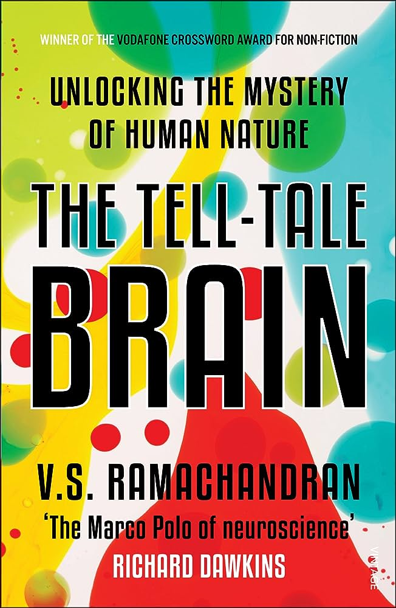
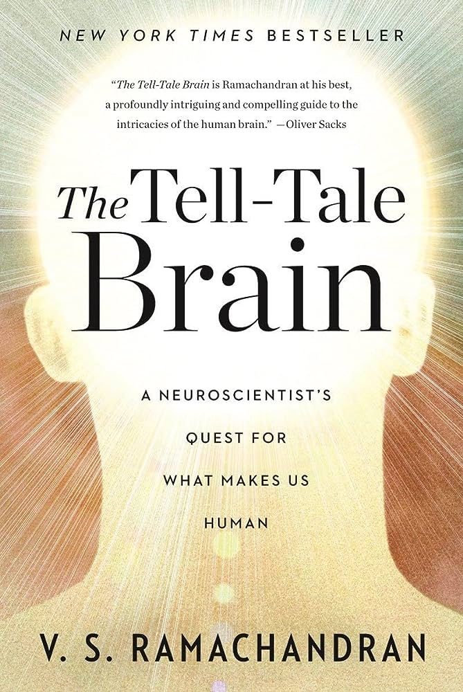
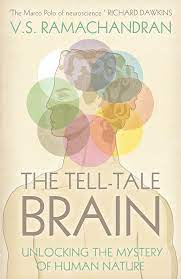

<!---RMIT University Vietnam
  Course: COSC2430 Web Programming
  Semester: 2023
  Assessment: Assignment 1 - Static Website
  Author: Pham Minh Quang
  ID: S3978814
  Acknowledgement: Book Detail Page--->
<!DOCTYPE html>
<html>
<head>
    <title>Book Details Page</title>
    <meta name="viewport" content="width=device-width, initial-scale=1">
</head>
</html>
<meta name="viewport" content="width=device-width, initial-scale=1">
  <link rel="stylesheet" type="text/css" href="booksdetail.css">
  <link rel="stylesheet" href="https://cdn.jsdelivr.net/npm/@fortawesome/fontawesome-free@6.2.1/css/fontawesome.min.css">

</head>
<body>
    <section class="header">
        <nav>
            <a href="index.html">
            </a>
            <div class="nav-links" id="navLinks">
                <i class="fa-solid fa-x" onclick="hideMenu()"></i>
                <ul>
                    <li><a href="index.html">HOME</a></li>
                    <li><a href="best.html">BESTSELLERS</a></li>
                    <li><a href="philoshophy.html">PHILOSOPHY</a></li>
                    <li><a href="neuroscience.html">NEUROSCIENCE</a></li>
                    <li><a href="contact.html">CONTACT</a></li>
                </ul>
                
            </div>
            <i class="fa-solid fa-x" onclick="showMenu()"></i>
        </nav>
        </section>
        <!---JavaScript--->
<script>
            var navLinks = document.getElementById("navLinks");
            function showMenu(){
                navLinks.style.right = "0";
            }
            function hideMenu(){
                navLinks.style.right = "-200px";
            }
</script>
<section class="det">
    <h2><a href="index.html">Home</a> > <a href="neuroscience.html">Neuroscience</a> > The Tell-Tale Brain: A Neuroscientist's Quest for What Makes Us Human</h2>
    <div class="desc">
        <div class="imga">
            
        </div>
        <div class="timg">
            
            
            
            
        </div>
        
       
        
    </div>
    <div class="money">
        <h1>$20</h1>
    </div>
    <button class="button">Purchase</button>
    <h1>The Tell-Tale Brain: A Neuroscientist's Quest for What Makes Us Human</h1>
    <p>V. S. Ramachandran is at the forefront of his field-so much so that Richard Dawkins dubbed him the "Marco Polo of neuroscience." Now, in a major new work, Ramachandran sets his sights on the mystery of human uniqueness. Taking us to the frontiers of neurology, he reveals what baffling and extreme case studies can teach us about normal brain function and how it evolved. Synesthesia becomes a window into the brain mechanisms that make some of us more creative than others. And autism--for which Ramachandran opens a new direction for treatment--gives us a glimpse of the aspect of being human that we understand least: self-awareness. Ramachandran tackles the most exciting and controversial topics in neurology with a storyteller's eye for compelling case studies and a researcher's flair for new approaches to age-old questions. Tracing the strange links between neurology and behavior, this book unveils a wealth of clues into the deepest mysteries of the human brain.</p>
         <br>
</section>

</body>
<footer>
    <nav>
        
        <div class="footer-nav-links">
    
            <a href="about.html">ABOUT US</a>
            <a href="privacy.html">PRIVACY POLICY</a>
            <a href="terms.html">TERMS OF USE</a>
            <a href="contact.html">CONTACT US</a>
            
        </div>
    </nav>

</footer>
</html>